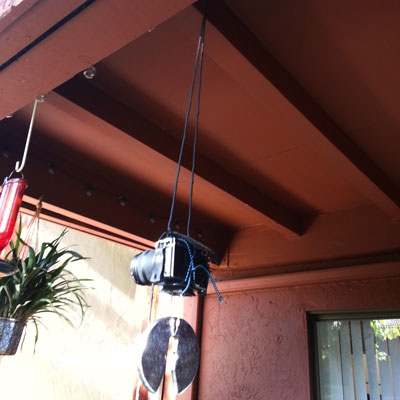
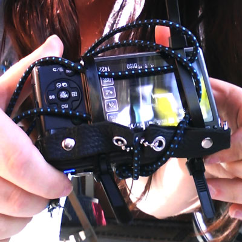
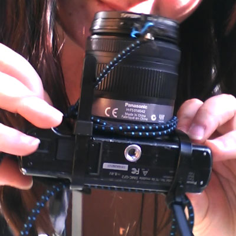

Project 2
Video 7
This is a 30 minute surveillance video. I found the idea of paths converging very interesting. I thought that the dynamics of people crossing paths could produce an interesting visual story. The camera was mounted to a tripod to prevent unwanted movement and was placed in a second story window of the art building. I had to reduce the quality of the recording in order to allow my camera to take such a long video. I felt this added to the "covert surveillance" aspect of the project because up until the recent past, surveillance video was notoriously bad. The entire 30 minutes has been sped up to create one 20 Second clip shown here. Enjoy!
Video 8
This video was an exercise in creative mounting techniques. For years technicians have been striving to create the most stable camera rigs in order to get steady footage. I thought I would push back against this trend and see what it would be like to look at and work with video from a moving source. For my first mounting technique pictured below, I wrapped my camera in bungee cord and mounted it with paracord to the ceiling of my back porch. This created a gentle swinging motion which I found very pleasing and relaxing (if not somewhat sickening from the motion.) For my second mounting technique I wanted to see what it would look like to drop a camera, from the camera's point of view. In order to do this safely I decided to zip-tie my camera to the bungee cord and bounce it. The resulting video was immensely successful. I really enjoy the snippets of video that come briefly into focus and then go out again, as well as the blur of the human figure (myself of course) in the background.
Mount 1 - The Camera Swing

Mount 2 - Camera YoYo

Video 9
Trashy from Pistol Pete on Vimeo.
This video was made to answer the question "In a world with changing gender roles, where taking out the trash was historically a man's chore, who takes out the trash these days?" I set up an old iSight camera from 2005 to shoot video out of the back window in my apartment. This window has a wonderful view of the dumpsters and allowed me to shoot video for 3 days, amassing around 25 hours of video. After I compressed the video files, taking them from 200 GB a piece to a more manageable 12 GB each, I began the process of skimming the video for trash deposits. Once I collected all the clips of people taking out the trash, I created some graphics that I thought would break the monotony and found some music that would liven things up.
Initially I had some problems getting the video timing under the 90 second mark required for these videos. The problem arose because I was adjusting the timing when I was initially choosing the video clips. This was problematic because without any way of knowing how many additional clips I would come across it was impossible to know how long each clip needed to be. Eventually I realized that it would be much better to harvest the clips I needed first and then adjust the timing of the entire set to get it under the time limit.